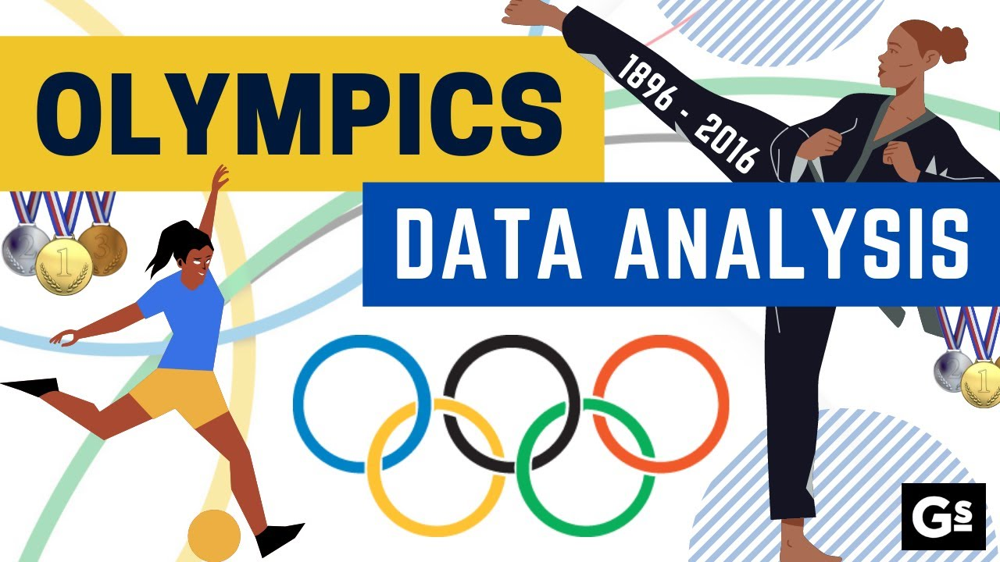

I demonstrated strong analytical skills by analyzing and interpreting Covid-19 data to forecast cases. I conducted thorough data cleaning and Exploratory Data Analysis (EDA) to ensure the accuracy and reliability of the forecasting process. Drawing upon my expertise in data modeling pipeline and statistical analysis, I developed models using advanced techniques such as regression analysis and time series forecasting. Through these efforts, I contributed to informed decision-making processes and provided critical insights into the trajectory of Covid-19 cases.

I developed a Tableau HR analytics dashboard with KPIs that enabled proactive interventions to improve retention and employee satisfaction. Through this, I contributed to optimizing the workforce and improving HR processes, ultimately driving overall organizational success.
I developed an advanced Tableau dashboard for tracking consumer complaints in the financial industry. The dashboard included features such as quick filters, parameters, and calculated fields to allow for easy tracking of complaints. I also created action filters, parameters, and calculated sets to prepare the dashboards and worksheets in Tableau.
I built an NLP system that classified emails as spam or not spam using natural language processing techniques. To implement various models, I utilized the sci-kit-learn and NLTK libraries. Through exploring different techniques, such as Logistic Regression, SVM, and Ensemble techniques, I achieved a 98% accuracy rate using Random Forest.

I analyzed Olympics data by utilizing seaborn, pandas, and Numpy, and explored meaningful information through EDA. To ensure accuracy, I carried out data cleaning by performing feature extraction and removing outliers. By building data models and maps, I was able to generate meaningful insights from the Olympic data.